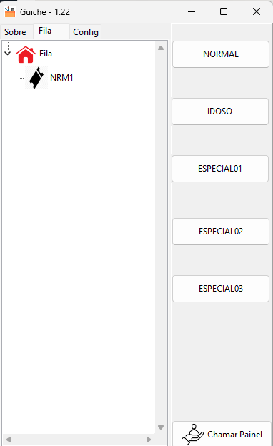
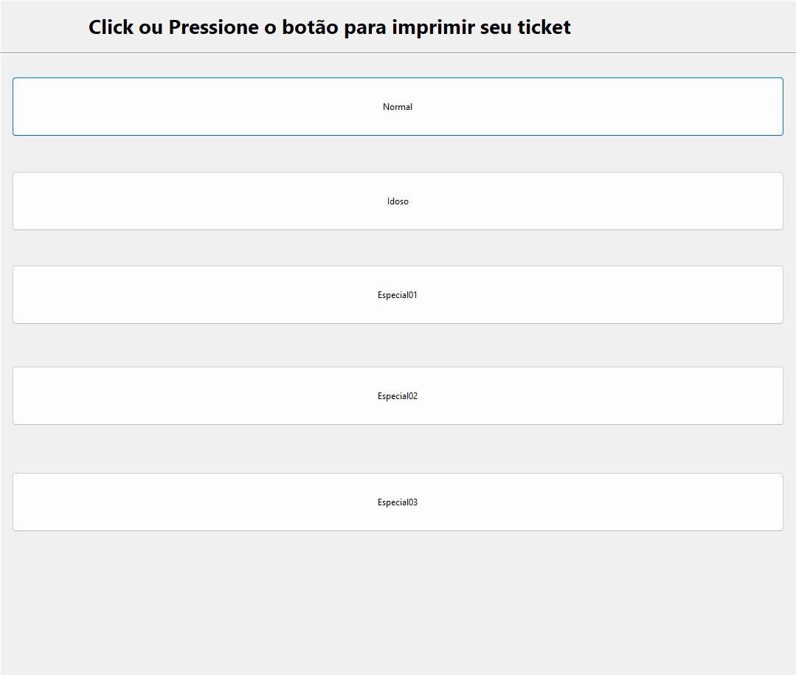
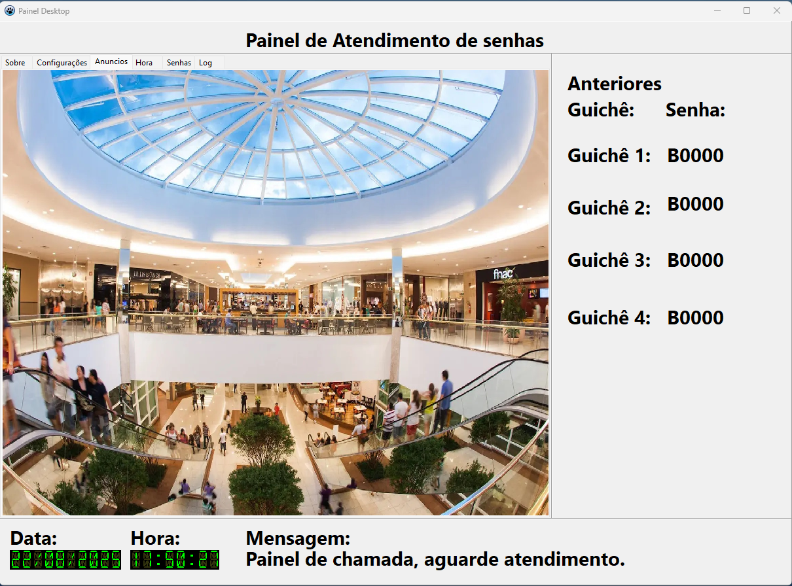
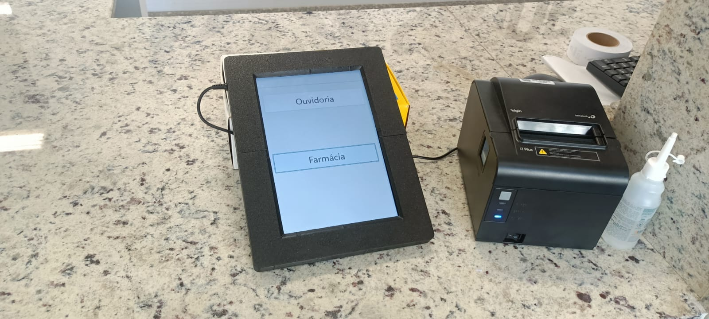

Controle ágil, humanizado e distribuído de atendimento. Emissão de senhas, guichês independentes e chamada sonora com sintetizador de voz em painéis multimídia ou TVs.




O Projeto Fila é composto por módulos leves e ultra-rápidos que se comunicam através da rede local, garantindo altíssima disponibilidade mesmo em caso de falha de conexão à internet.
O módulo Fila é o coração do sistema. Ele controla a emissão de senhas em totens ou impressoras térmicas, gerencia a numeração sequencial das filas (Normal, Preferencial, Exames, etc.), escuta as requisições dos guichês pela porta de rede TCP 8095 e fornece informações ao painel pela porta 8096.
O módulo Guichê roda na estação de trabalho de cada atendente. Com interface minimalista que não consome memória da máquina, permite chamar a próxima senha com um único clique ou atalho no teclado.
O PainelDesk é executado no computador ou mini PC conectado à TV da sala de espera. Ele escuta chamadas TCP na porta 8196, exibe em letras gigantes a senha e o guichê correspondente, mantém o histórico das 4 últimas chamadas e fala o número com voz clara e audível.
O módulo Contador grava automaticamente todas as transações de atendimento em um banco de dados local SQLite. Isso permite auditar e extrair estatísticas cruciais para a gestão da sua equipe.
Toda a troca de dados acontece via sockets TCP/IP velozes, sem necessidade de servidores externos pesados nem dependência de internet:
| Tecnologia Base | Desenvolvido nativamente em Lazarus / Free Pascal (código compilado de alto rendimento, sem runtime pesada) |
|---|---|
| Protocolo de Rede | Comunicação TCP/IP direta (Portas 8095, 8096, 8196). Funciona 100% offline em rede local (LAN). |
| Capacidade de Filas | Até 5 filas simultâneas por unidade (ex: Normal, Preferencial, Exames, Farmácia, Triagem). |
| Compatibilidade Térmica | Impressoras térmicas seriais, USB e de rede (Zebra, Elgin, Bematech, Daruma, Epson ESC/POS). |
| Sistemas Operacionais | Windows 10, 11, Windows Server e suporte a distribuições Linux (Ubuntu, Debian, Raspberry Pi OS). |
| Áudio & Voz | Geração por módulo de voz em português com bip de chamada ajustável. |
| Banco de Dados | SQLite local sem necessidade de instalação de SGBD complexo. |
| Licenciamento | Licença sob medida, sem amarras nem cobrança surpresa por usuário conectado. |
Elimine confusões na recepção, cumpra a lei de prioridade com rigor e transmita uma imagem profissional para seus clientes e pacientes.